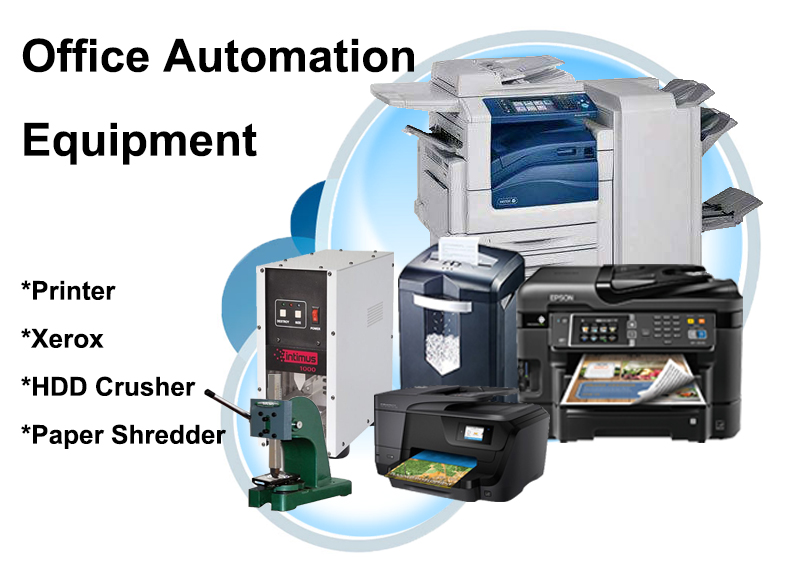
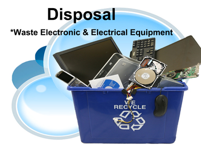

KKC is one total solution for your Information Technology needs providing simplicity at it’s best.(Sales, Rental, Installations)
| |
Desktop OEM & Refurbished PC,Custom or Pre Built system unit Tower PC and Small Form Factor Monitors Variety of sizes & Types L.E.D. & L.C.D, Square and Wide. Hardware GPU’s, CPU’s, RAM, HDD, PCI I/O, Peripherals, Keyboard,Mouse Headset, AVR’s Etc.. Unit Upgrade Change or Upgrade of hardware |
 |
Netbooks Lightweight Key Characteristics : 10" to 14"-inch diagonal screen Laptop Everyday Computing Key Characteristics : 15.6"-inch all the way to 18.4"-inch diagonal screen Gaming Desktop Replacement 17.3"-inch diagonal screen |
|  |
Printer Dot-Matrix/ Drum/Band Printers. Ink-jet & Laser Printer Xerox Mono & Color Copiers, Multifunction Copiers Air Pack Bubble wrapping machine |
|
File Server Stores network users' data files Domain server Authenticates and authorizes computers and users to access resources within the logical domain Database server Manages common databases for the network, handling all data storage, database management and requests for data. Application server Shares network-enabled versions of common application software and eliminates the need for software to be installed on each workstation Communication Server Handles many common communications functions for the network, such as e-mail, fax, remote access, firewalls or Internet services |
|
|  |
Waste Electronic Disposal A re-assessment of your obsolete Computers as Recycle buy-out |